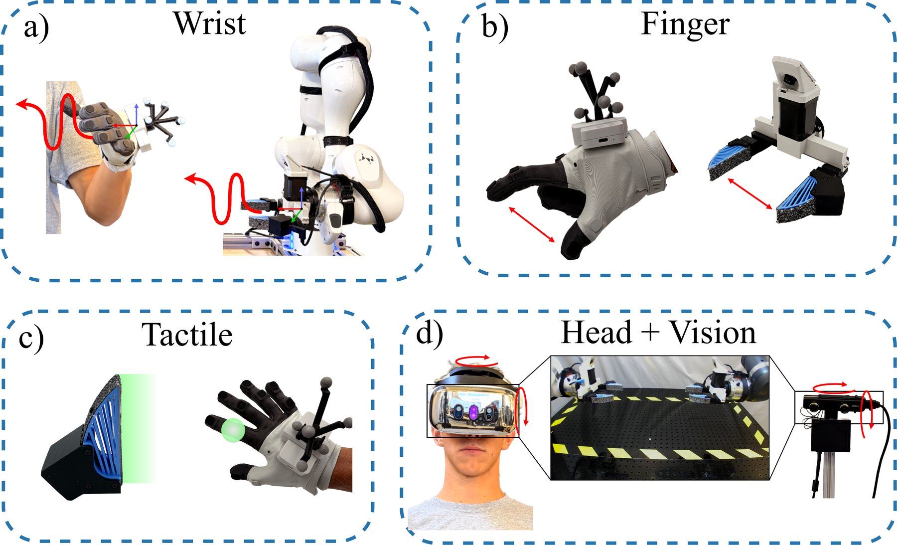
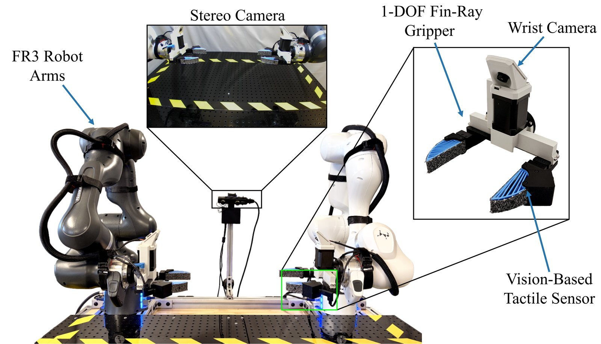
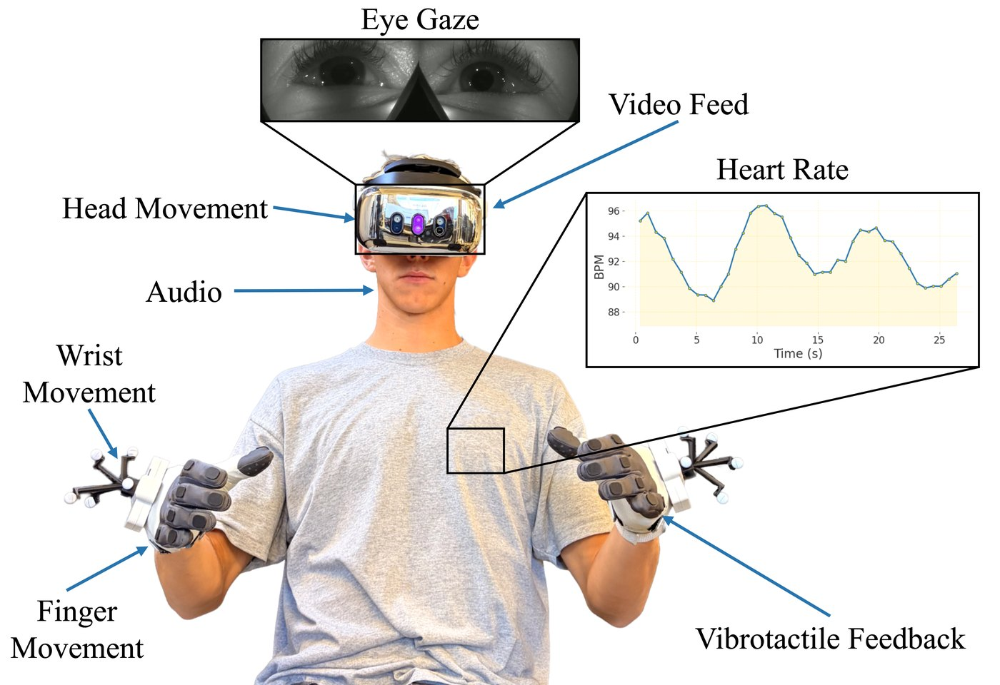

Human-Centered Bimanual Teleoperation
A two-arm robot that a person operates through a passthrough headset across large distances, seeing through the robot’s camera and still feeling what it touches, and shared autonomy that adapts to each operator.
My part: I lead the controls team. I wrote the teleoperation controller and run the shared autonomy study.
Highlights:
Poster, IEEE Haptics Symposium, 2026
The system
The Office of Naval Research funds this collaboration between UCLA, Case Western Reserve University and Cleveland State University. The system uses two Franka FR3 arms. Each carries a 1-DOF Fin-Ray gripper with vision-based tactile sensors and a wrist camera, and a stereo camera streams the scene to the operator’s headset.
How the person and the robot connect
Four channels tie the operator to the robot. Moving the wrist moves the arm, and closing the hand closes the gripper.
When the gripper’s tactile sensors touch something, the operator feels it on their hand through neurohaptic display rings designed by our collaborators at Case Western.
Turning the head turns the camera, and its view streams back to the headset.

Teleoperation controller
The controller had to:
- Avoid kinematic singularities
- Maximize manipulability of the end effector
- Support both “palm up” and “palm down” hand configurations
- Keep up with human movements
I developed an optimization-based controller that maximizes manipulability and minimizes joint velocities within each arm’s kinematic limits, keeping the robot responsive and predictable so the operator feels embodied in it. It runs in ROS 2 across both arms.

Shared autonomy
Shared autonomy is usually judged on speed and accuracy. I’m interested in how it feels to the person in the loop: their sense of agency, trust and embodiment.
We record gaze, heart rate and motion while people use the system, and use that data to build shared autonomy that adapts to each operator. The study is underway now, so more to come.

Presented at the IEEE Haptics Symposium 2026 (Cross-Cutting Challenge: Touch, Embodiment, and Multisensory Future). View the poster (PDF).